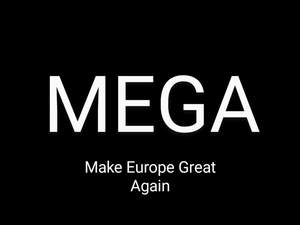

Trade Mark Journal No.2025/018 2 May 2025
UK00004177380 21 March 2025 (41)

- Class 41
- Providing of education; Education information; Educational instruction; Educational research; Educational testing; Educational seminars; Educational examination; Education and instruction; Management education services; Career counseling [education]; Education academy services; Educational advisory services; Educational examination services; Developing educational manuals; Educational assessment services; Educational institute services; Providing educational demonstrations; Online educational testing; Educational services for providing courses of education; Education and instruction services; Education and training consultancy; Provision of education courses; Rental of recorded education; Organising of education exhibitions; Providing information about education; Conducting of educational events; Organisation of educational events; Development of educational materials; Educational and teaching services; Conducting of educational courses; Organisation of examinations [educational]; Organization of educational congresses; Organising of educational lectures; Workshops for educational purposes; Dissemination of educational material; Provision of educational information; Provision of educational examinations; Online educational examination services; Vocational education for young people; Professional consultancy relating to education; Provision of training and education; Advisory services relating to education; Entertainment, education and instruction services; Providing information about online education; Vocational education and training services; Arranging and conducting educational conferences; Organisation of continuing educational seminars; Organisation of seminars relating to education; Research in the field of education; Vocational guidance [education or training advice]; Provision of educational examinations and tests; Arrangement of conferences for educational purposes; Arrangement of conventions for educational purposes; Arrangement of seminars for educational purposes; Arranging of competitions for educational purposes; Arranging of demonstrations for educational purposes; Arranging of presentations for educational purposes; Arranging and conducting of educational courses; Educational examination services (Information relating to -); Development of educational courses and examinations; Organising of meetings in the field of education; Arranging of exhibitions for cultural or educational purposes; Organization of exhibitions for cultural or educational purposes; Conducting educational workshops in the field of business; Career information and advisory services (educational and training advice); Conducting guided tours of cultural sites for educational purposes; Arranging and conducting of meetings in the field of education; Training or education services in the field of life coaching; Providing of information relating to continuing education via the Internet; Computer based educational services in the field of business management; Provision of information relating to physical education via an online web site; Conducting of instructional, educational and training courses for young people and adults; Provision of information and preparation of progress reports relating to education and training; Information relating to education, provided on-line from a computer database or the internet; Provision of education on-line from a computer database or via the internet or extranets; Occupationally orientated instruction; Training services relating to occupational health; Education in the field of occupational health and safety; Education and training services in the field of occupational health and safety; Cultural activities; Cultural services; Providing cultural activities; Sporting and cultural activities; Organization of cultural shows; Workshops for cultural purposes; Conducting of cultural events; Conducting of cultural activities; Organising community cultural events; Entertainment, sporting and cultural activities; Organizing cultural and arts events; Organising events for cultural purposes; Providing information about cultural activities; Administration [organisation] of cultural activities; Information relating to cultural activities; Organisation of entertainment and cultural events; Organizing community sporting and cultural events; Organization of events for cultural purposes; Organization of shows for cultural purposes; Arranging of competitions for cultural purposes; Arranging of conventions for cultural purposes; Arranging of demonstrations for cultural purposes; Arranging of displays for cultural purposes; Arranging of festivals for cultural purposes; Arranging of presentations for cultural purposes; Arranging and conducting of cultural activities; Arranging of conferences relating to cultural activities; Arranging of seminars relating to cultural activities; Providing user reviews for entertainment or cultural purposes; Providing user rankings for entertainment or cultural purposes; Providing user ratings for entertainment or cultural purposes; Organisation of events for cultural, entertainment and sporting purposes.
Paul Jelley
Representative: GCS Europe Ltd